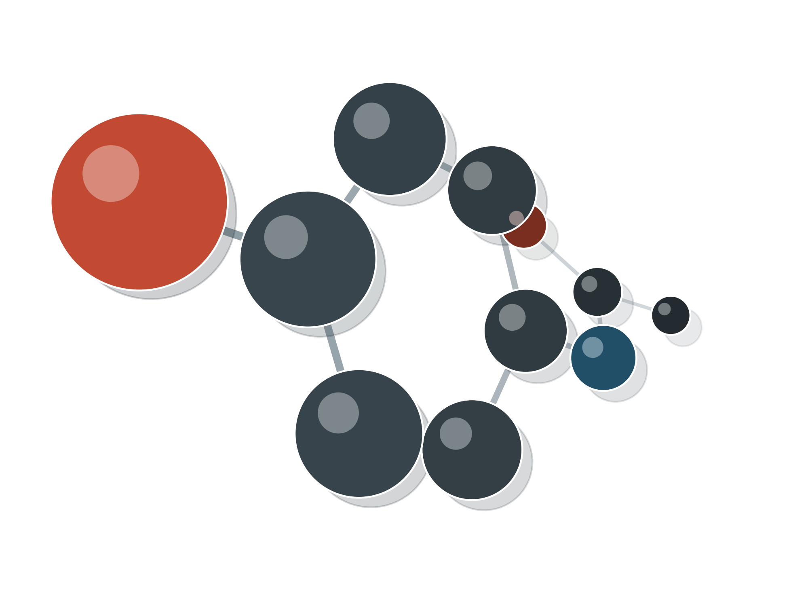
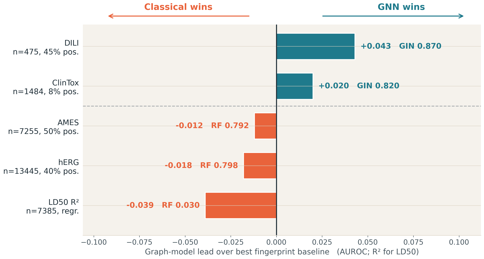
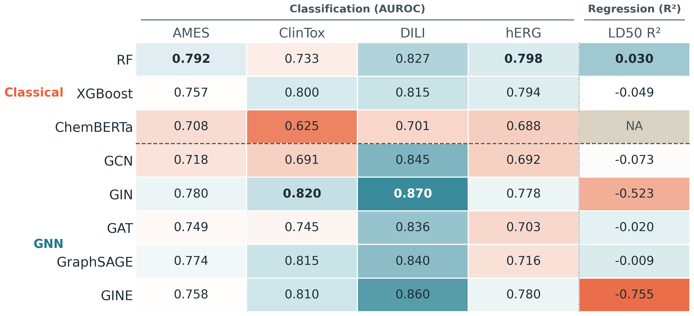
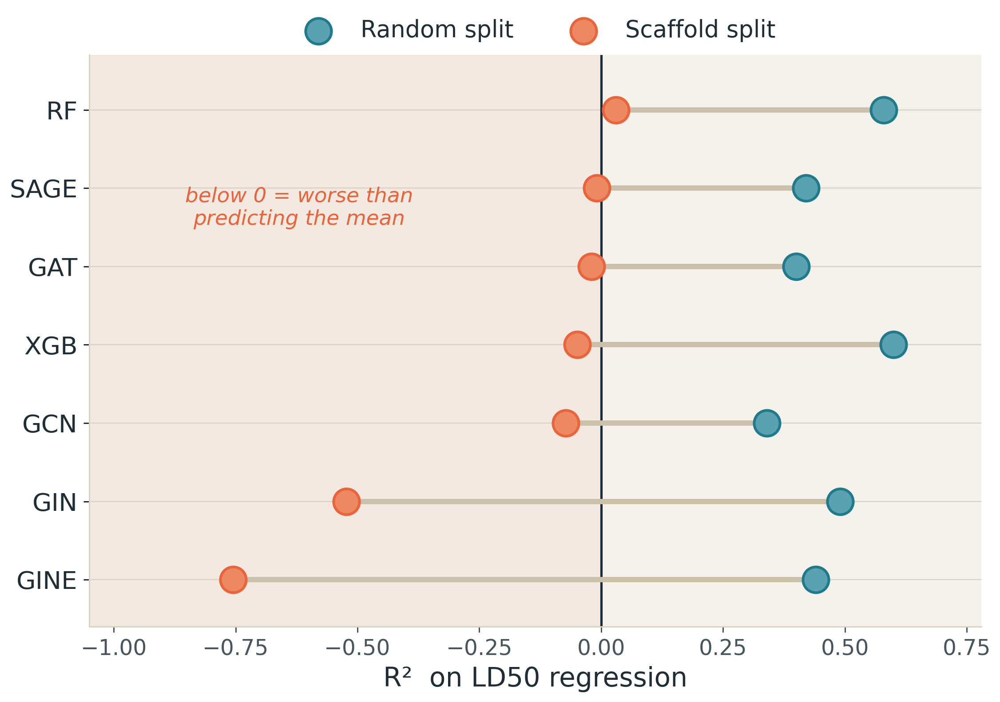
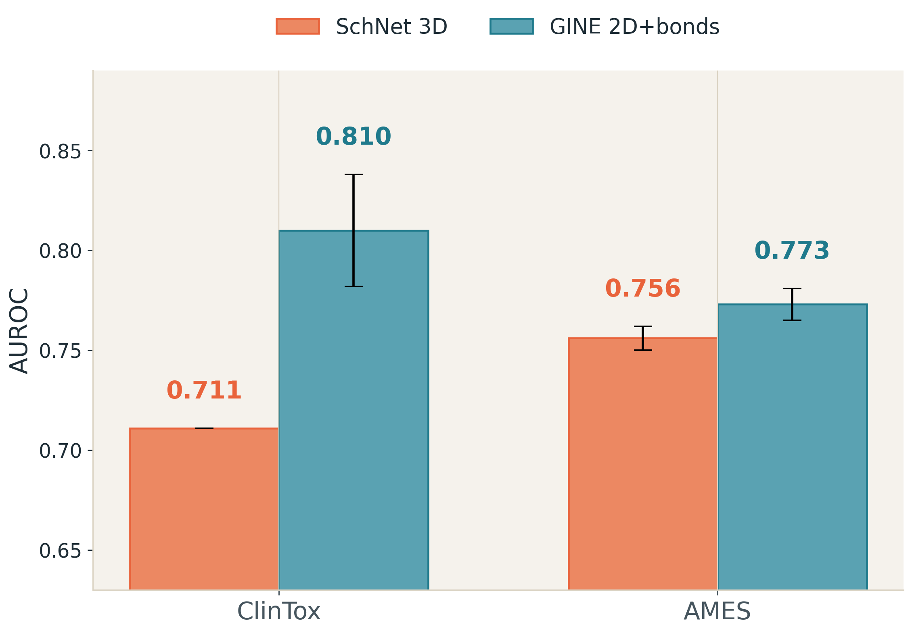
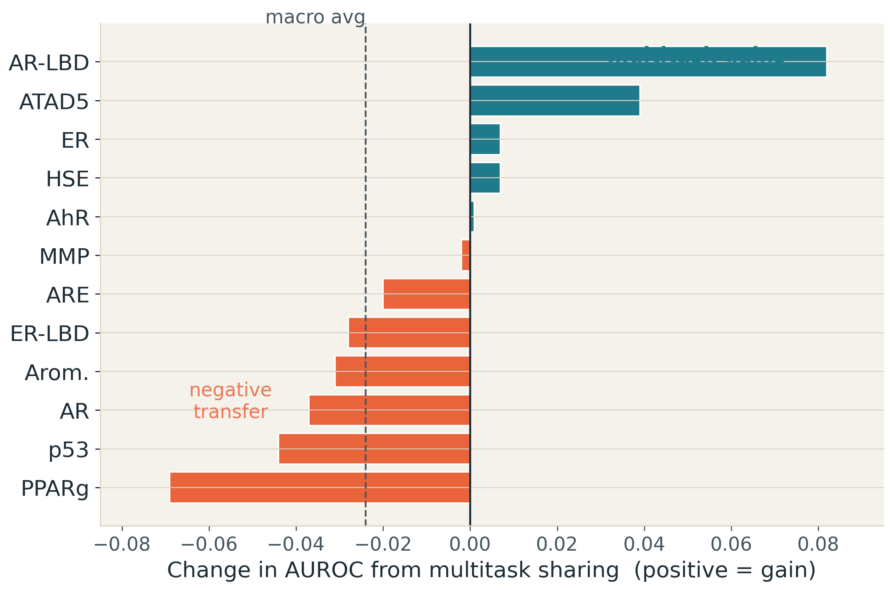

Do graph and geometric models beat fingerprint baselines for toxicity once the evaluation is realistic? Four representation families are tested on the same molecules, scaffold split and metrics.


Two regimes appear. Clinical tasks favour GIN. Larger datasets favour fingerprints.


Random splits reward near-neighbour memorization. Scaffold splits test extrapolation to unseen chemical cores.

3D geometry is not automatically better. Approximate conformers add spatial signal, but also noise.

Sharing one GIN backbone across all 12 endpoints lowers macro AUROC. Only related endpoints benefit.